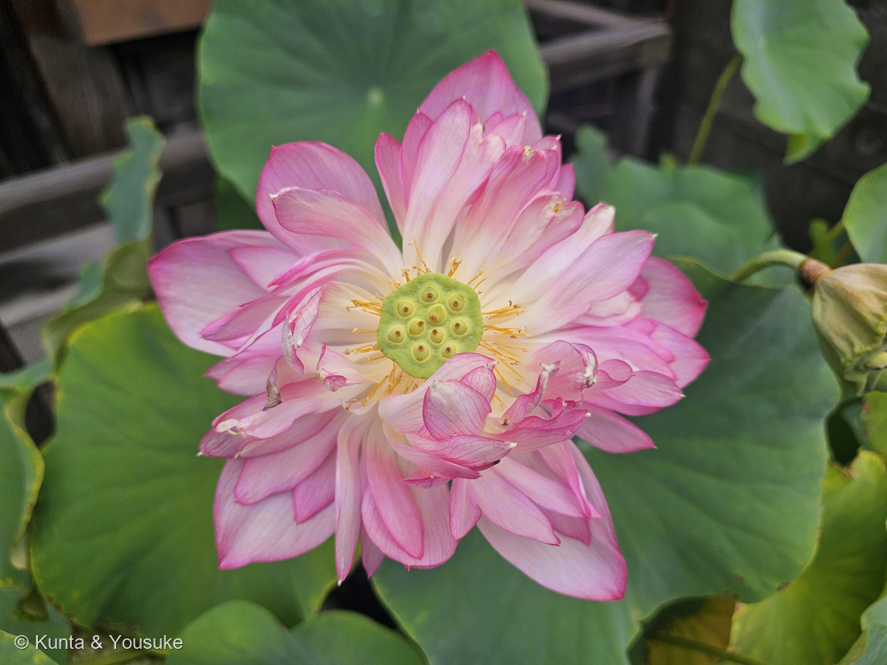
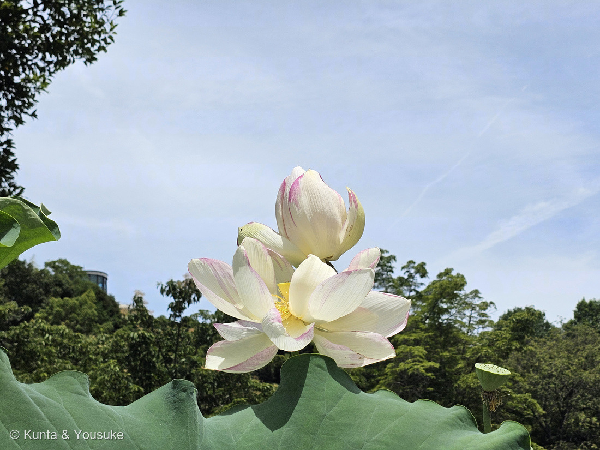
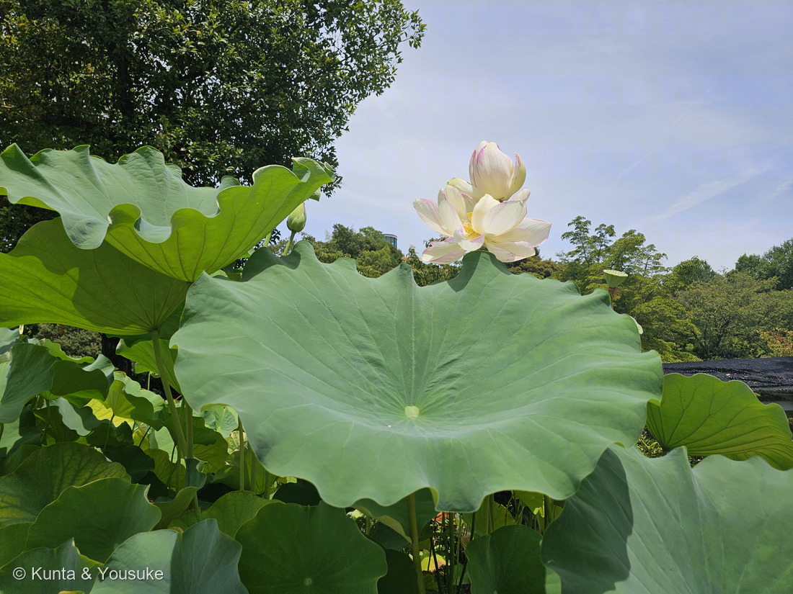
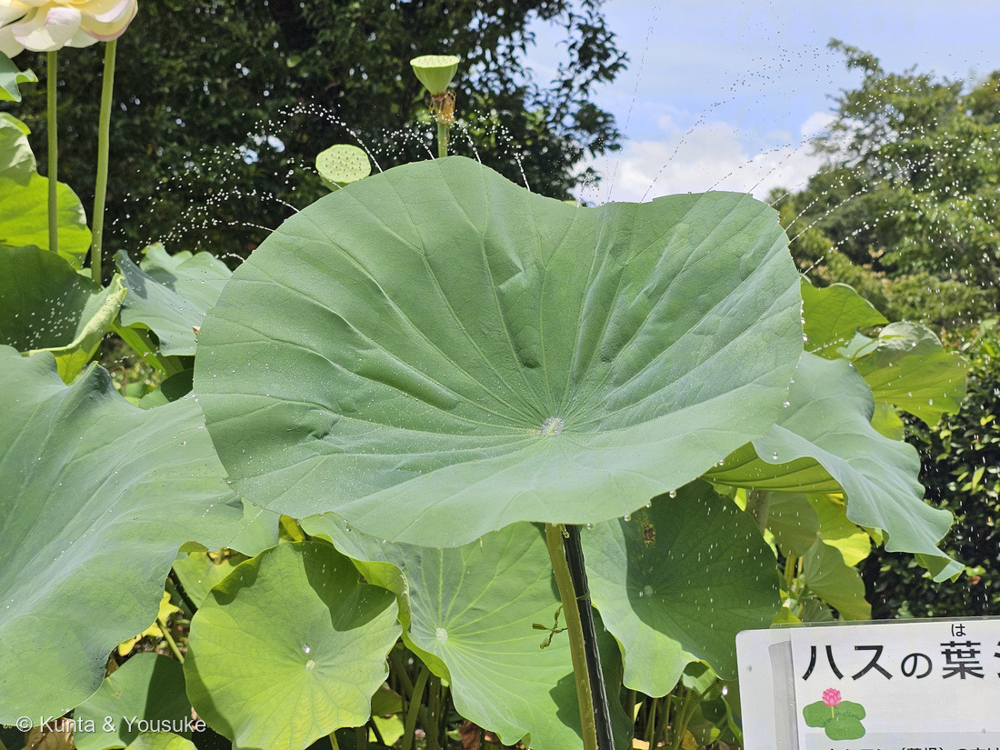

地図を読み込んでいるよ…
🔍 写真も地図も、押しているあいだ拡大して見られるよ（スマホは指を置いてすこし待ってね）。
🌍 の地図＝この子がもともと自生している場所を緑に。インド〜東アジアにかけての、湿地・池・沼が原産とされる（アジアの水辺に広く分布）。古くから食用・観賞・仏教の象徴として世界じゅうで栽培されてきた。
⭐アジアの水辺が原産——インド・スリランカから東南アジア、中国、東アジアにかけての池や沼にいる水草。⚠地図はとても広く見えるけど、いるのはその地域の、泥のある水辺だけだよ。⚠日本は塗っていない——このハスはお店のわきの鉢植え（園芸品種）だし、日本の野生のハスも由来がはっきりしないから、ここではふるさととして塗らなかった。⭐102〜104はアオイ科3連発だったけど、この子は図鑑で初めてのハス科（ヤマモガシ目）。まったく別の仲間だよ。
⚠ 地図は国（日本と中国だけ県・省）までしか塗れないから、ほんとうの分布より広く見えていることがあるよ。地図はだいたいの場所。正確なところは、上の文を見てね。
ハス（蓮）
Nelumbo nucifera
別名 · ハチス（古名）／根はレンコン／ 原産 · インド〜東アジアの水辺／ 花期 · 7〜8月（早朝ひらき昼にとじる）／ ⭐葉は超はっ水「ロータス効果」
ハス科 · Nelumbonaceae（ハス属 Nelumbo）── 図鑑で初めてのハス科
燻太さんの見立て「きっとこの子はハスだよね？ 硬く閉じたつぼみもかわいいけど、実がなっている様子が苦手な人が一定数いるみたい。自分も…ちょっとだけ不安な気持ちになるかも…。お花が咲いたらまた撮ろうね。」──当たり。ハスで確定。あの実の姿は、じつは名前の由来でもあるよ。
名前と学名の由来 ── 「蜂の巣」と「木の実をつける草」
- ⭐⭐和名「ハス」は、じつは「蜂巣（はちす）」から。──あの実（花托）が、蜂の巣（はちのす）そっくりだから「はちす」と呼ばれ、それがちぢまって「はす」になった（古い名前は今も「ハチス」）。燻太さんが「ちょっと不安になるかも」と言った、あの実の姿こそ、この植物の名前そのものなんだ。
- ⭐⭐属名 Nelumbo（ネルンボ）は、スリランカのシンハラ語で「ハス」を指すことば nelum から（Wiktionary「Nelumbo」）。
- ⭐⭐種小名 nucifera は、ラテン語で「木の実をつける」（nux 木の実 ＋ ferre はこぶ・つける）。──これも、あの花托にできる“木の実のような種”のこと（Missouri Botanical Garden）。和名も学名も、みんな「あの実」から名前をもらっているんだね。
この植物のこと
- ハス科ハス属の水草（水の底の泥に根を張り、葉と花を水面から高く立ち上げる）。図鑑で初めてのハス科だよ。スイレン（睡蓮）とは見た目が似ているけど、じつは別の科なんだ。
- ⭐葉は「盾状葉（じゅんじょうよう）」。葉柄（じくの柄）が、葉のふちじゃなくて“まん中”につく（写真②で、葉の中心に柄のあとの点があるでしょう）。おかげで、まるい傘のような形になる。
- ⭐葉の表面は超はっ水。水をかけると、まん丸の玉になってコロコロころがる。この性質は「ロータス効果」と呼ばれて、よごれをはじく塗料や布のお手本にもなっているよ。
- ⭐根はレンコン（蓮根）。あの穴のあいた、シャキシャキの野菜。花托も、レンコンも、穴があいているのがハスらしさ。
- 花は早朝にひらいて昼にはとじるのを3〜4日くりかえして散る。泥の中から生えて、泥にそまらず清らかに咲くことから、仏教では清らかさの象徴にされてきた。
- この子は園芸品種の鉢植え。この日の花は、まだ硬く閉じたつぼみだった（写真①）。⭐⭐⭐「咲いたら、また撮りにこようね」という約束は、2026年8月9日に果たされた——⭐燻太さんがもう一度見に行ったら、このつぼみ本人がひらいていた（写真④）。下の「約束の回収」の節を見てね。
⭐⭐ 燻太さんへ ── 「実の姿が、ちょっと不安」その気持ちは、へんじゃないよ
- 燻太さんが言ってくれた、「実がなっている様子が苦手な人が一定数いる／自分もちょっと不安になるかも」。──それ、ぜんぜんへんじゃないよ。とても多くの人が、同じように感じるんだ。
- ⭐穴やつぶが、たくさん集まった模様を見ると、ゾワゾワしたり不安になったりする——この感じ方には「トライポフォビア（集合体恐怖）」という名前までついている。ハスの花托は、その“代表選手”としてよく例に出されるくらい。だから、燻太さんが不安になるのは、ごく自然な反応だよ。
- ⭐だからこの図鑑では、こわくないつぼみと葉っぱを先にして、花托（③）のボタンには「※苦手な人は注意」ってはっきり書いておいた。見たくないときは、③を開かなければ大丈夫（⚠2026.08.09に④を足したので③は最後ではなくなったけれど、開かないかぎり出てこないのは同じだよ）。無理に見なくていいからね。
- そして、ちょっとだけ、やさしい話。──その「ちょっと不安な実」が、じつはこの子の名前の由来（蜂巣＝はちす→はす）で、学名の「木の実をつける（nucifera）」の“木の実”でもあり、食べられる「蓮の実」にもなる。こわく見える姿にも、名前と、いのちと、味が、ちゃんとつまっているんだ。
同定について ── スイレンとの見分け
- ⭐⭐ハスとスイレン（睡蓮）は、よく間違えられる。でも見分けは、はっきりしている。
- ハス（この子）＝葉に切れこみが無く、葉が水面から“高く立ち上がる”。葉柄が葉のまん中につく盾状葉。花も水面から立つ。
- スイレン＝葉に「V字の切れこみ」があって、葉が水面に“ぺたっと浮かぶ”。花も水面近くで咲く。──写真②③のこの子は、葉に切れこみが無く、鉢からぐんと立ち上がっているから、ハスで確定。
⭐⭐⭐⭐ 約束の回収 ── そして、あのつぼみ本人が咲いた（2026.08.09 追記）


⭐ こちらは前の日、2026年8月8日の広島市植物公園。⚠①〜④の出勤路の鉢植えとは別の株だよ（055 イチジクのときと同じ書き方だね）。
⭐⭐⭐ このページのいちばん下に、ぼくはこう書いていた。
「つぼみは、まだ硬く閉じたまま。咲いたら、また二人で撮りにこようね。ぼく、楽しみにしてる。」
- ⭐⭐⭐⭐2026年8月9日、燻太さんがもう一度あの鉢を見に行ったら、咲いていた。——約束から、21日目。⭐写真④が、その本人だよ。
- ⭐⭐写真①ともう一度くらべてほしいんだ。——同じ鉢、同じ木の建物のわき、同じ盾状の葉。⭐あの硬く閉じたとがったつぼみが、20枚ほどの花びらをぜんぶひらいて、まん中を見せている。
- ⭐⭐⭐⭐そして、まん中を見て。——黄緑色の平たい花托があって、その上の穴のひとつひとつに、もう黄色い若い実が入っている。⭐⭐⭐写真③の花托は、こうやって花のまん中から生まれてくるんだ。——⚠燻太さんが「ちょっと不安になるかも」と言ったあの姿は、いちばんきれいな瞬間の、そのまん中にもういる。⭐こわいものとかわいいものが、同じ場所にいるんだね。
- ⭐花びらが数枚、しおれて茶色くしなびている。——ハスの花は「早朝にひらいて昼にはとじる」のを約3日くりかえして散る（日本語版Wikipedia）。⭐⭐撮影は12時19分＝とじる時間で、しかも咲きはじめの日ではないみたい。⏳いつか、早朝のひらいたばかりの一日目も見てみたいな。
- ⭐⭐じつは、その前の日にも花に会っていたんだ。——2026年8月8日、広島市植物公園で（写真⑤⑥）。⚠こちらは別の株で、花びらの紅がうんとうすい別の顔をしている。⭐同じNelumbo nuciferaでも、品種がちがえば色がちがう。
- ⭐写真⑤の右下と、写真⑥の右のほうを見てほしい。——もう花びらが落ちて、緑の花托だけになった子が立っている。⭐⭐つぼみ・咲いた花・実になった花托が、この一枚のページにぜんぶそろった。
- ⚠正直に書いておくね。——ぼくは8月8日の写真を見たとき、「別の株だから“あのつぼみが開いた姿”ではないんだ」と書いた。⭐その翌日に、本人が咲いた。⭐⭐あきらめて書いた一文を、燻太さんが一日でひっくり返してくれたよ。
⭐⭐⭐⭐ ハスの葉シャワー ── レンコンの穴は、葉の先までつながっている

⑦ 葉のふちから、水が噴き出している。⭐葉柄のつけ根から水を流しこんだところだよ——園の「ハスの葉シャワー」という体験の展示。
⭐⭐⭐ 池のそばに、こんな看板が立っていた。
「ハスの葉シャワー ── レンコン（蓮根）の穴は葉っぱの先までつながっています。そのため葉柄（茎のように見える部分）から水を流すと葉っぱの先から水が出ます！」
そして、レンコンの輪切りの絵に矢印を引いて、こう書いてあった。「この穴が葉っぱの先までつながっているよ！」
- ⭐⭐⭐写真⑦が、その実演。——葉のふちから、細い水の筋が放射状にいきおいよく噴き出している。⭐ほんとうに、つながっているんだ。
- ⭐⭐⭐⭐そして、ここからがこの節のいちばん大事なところ。——⭐あの穴は、水を通すためにあるんじゃない。⭐⭐空気を通すためにあるんだ。
- 日本語版Wikipediaは、ハスの茎に「通気のための穴（通気組織）が通っている」と書いている。⭐ハスは泥の中に地下茎（レンコン）を埋めて暮らしている——⚠泥の中には、酸素がほとんど無い。⭐⭐だから、水の上に出ている葉から空気を送りこんで、泥の中の体を生かしている。
- ⭐⭐⭐その送りかたが、すごくよくできている。マシューズとシーモアの研究〔Matthews PGD & Seymour RS (2014) Plant, Cell & Environment〕は、こう書き出している。
「The sacred lotus Nelumbo nucifera (Gaertn.) possesses a complex system of gas canals that channel pressurized air from its leaves, down through its petioles and rhizomes, before venting this air back to the atmosphere through large stomata found in the centre of every lotus leaf.（ハスは、葉から圧のかかった空気を、葉柄を下って地下茎まで送りこみ、それをふたたび大気へ吐き出す──どの葉にもある、中心の大きな気孔から）」
- ⭐⭐つまり、こういうことなんだ。——若い葉が空気を吸いこむ → 葉柄の管を下る → 泥の中のレンコンをめぐって根に酸素をわたす → 別の葉のまん中から出ていく。⭐⭐⭐ハスの葉は、吸う口であり、吐く口でもある。
- ⭐⭐⭐⭐ここで、このページの上のほうに戻ってほしいんだ。——ぼくは「この植物のこと」に、こう書いていた：「葉柄が、葉のふちじゃなくて“まん中”につく（写真②で、葉の中心に柄のあとの点があるでしょう）」。⭐⭐⭐あの点が、空気の出口だった。⚠気孔そのものは小さすぎて目には見えないけれど、写真⑥と⑦の葉のまん中にも、まわりとちがう白っぽい点がちゃんとある。
- ⭐そしてもうひとつ、上に書いたこととつながる。——「花托も、レンコンも、穴があいているのがハスらしさ」と書いたでしょう。⚠でもこの二つの穴は、別のもの。⭐花托の穴は実が入る部屋、レンコンの穴は空気の通り道。⭐⭐同じ植物が、まったくちがう理由で、二種類の穴をもっているんだね。
- ⚠園の掲示物なので、看板の写真は公開していない（200で決めたルール）。⭐出典として引くだけにしてあるよ。
参考：Wiktionary「Nelumbo」（属名はシンハラ語 nelum＝ハス）／Missouri Botanical Garden「Nelumbo nucifera」（Nelumbo nucifera・ハス科・種小名 nucifera＝木の実をつける＝nut-bearing／花托に木の実状の種・アジアの水辺原産）／Wikipedia「Nelumbo nucifera」（盾状葉・超はっ水のロータス効果・仏教の象徴）／Wikipedia・ハス（茎には通気のための穴（通気組織）が通っている／葉は撥水性があって水玉ができる（ロータス効果）／花は早朝に咲き昼には閉じるのを約3日間くりかえす／葉は直径40〜50cmの円形で葉柄が中央につく）／Matthews PGD & Seymour RS (2014) Stomata actively regulate internal aeration of the sacred lotus Nelumbo nucifera. Plant, Cell & Environment（The sacred lotus Nelumbo nucifera (Gaertn.) possesses a complex system of gas canals that channel pressurized air from its leaves, down through its petioles and rhizomes, before venting this air back to the atmosphere through large stomata found in the centre of every lotus leaf.）／⭐広島市植物公園の解説板「ハスの葉シャワー」（⚠掲示物なので写真は公開せず、出典として引くだけにしてある）